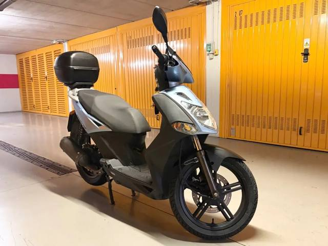
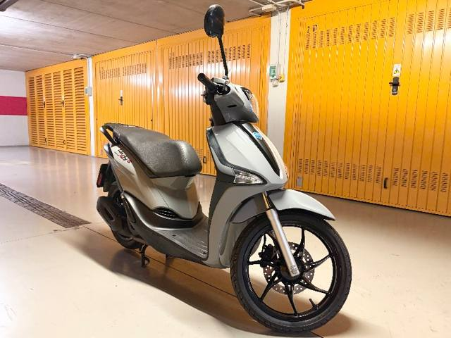
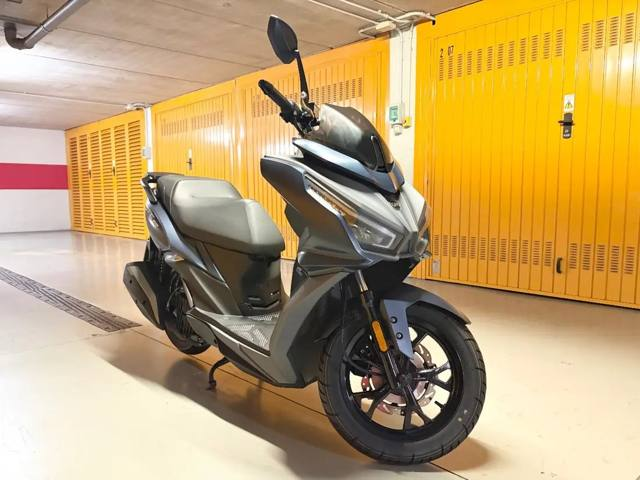

Scooter 125 usati a Milano
DND Moto vende moto e scooter usati a Milano. La nostra specialità sono gli scooter 125: alla portata di tutti, perché si possono guidare anche con la patente B, e comodi e pratici per muoversi in città.
Prima di metterli in vendita, ogni scooter viene controllato con attenzione, sottoposto al tagliando e alla revisione. Quando lo ritiri è pronto per l’uso di tutti i giorni, senza lavori da fare.
Disponibili ora
 7
7Kymco People 12510/2009 · 19.000 km€ 1.350
 7
7Peugeot Tweet 12512/2011 · 7.000 km€ 1.500
 7
7Piaggio Liberty 12502/2010 · 22.000 km€ 1.650
 7
7Kymco Agility 125 R16+05/2018 · 37.000 km€ 1.850€ 1.650

7Kymco Agility 12510/2008 · 2.000 km€ 1.850
 7
7Honda SH 125i06/2008 · 26.000 km€ 1.950€ 1.850
 7
7Yamaha Xenter 12506/2013 · 19.000 km€ 1.950
 7
7Kymco Agility 125 R16+03/2024 · 19.000 km€ 1.950
 7
7Piaggio Liberty 125 ABS09/2018 · 27.000 km€ 1.950

7Piaggio Liberty S 12506/2024 · 14.000 km€ 2.500

7SYM Jet 14 125 Evo03/2025 · 1.000 km€ 2.650
 7
7Piaggio Vespa LX 12512/2006 · 8.000 km€ 2.650
 7
7Yamaha TriCity 12502/2020 · 9.000 km€ 3.500€ 3.200
Come lavoriamo
Controllati prima della vendita
Tagliandati
Revisionati: se la revisione è scaduta, ce ne occupiamo noi
Pronti per l’uso quotidiano
Vieni a trovarci a Milano
DND Moto si trova in Via Fratelli Bronzetti 8, 20129 Milano, aperti tutti i giorni su prenotazione.
Prenota su WhatsAppChiama +39 334 811 2088